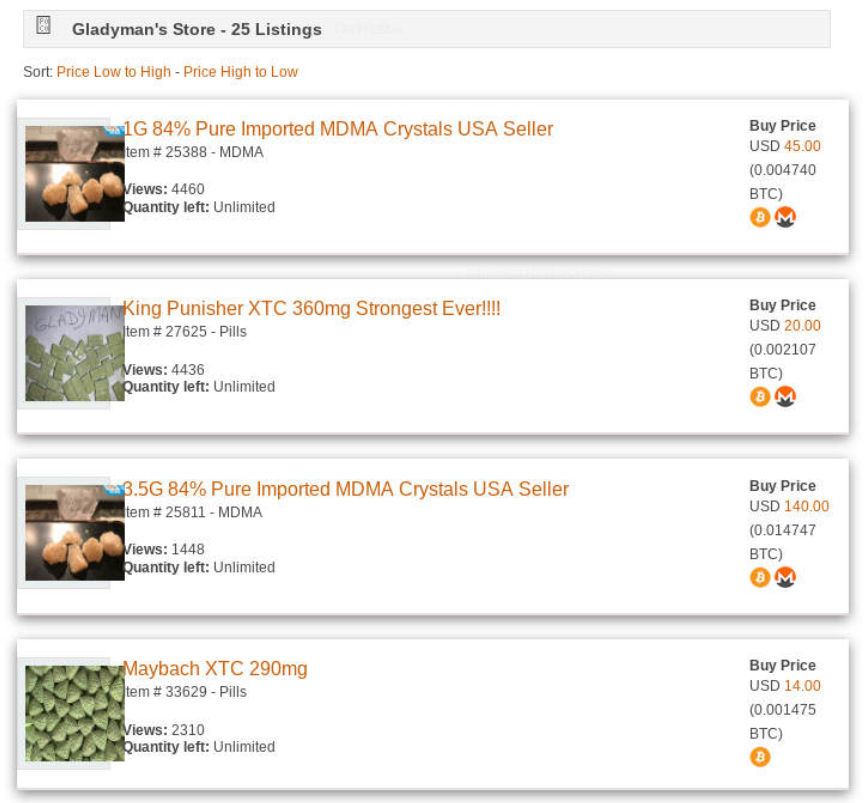
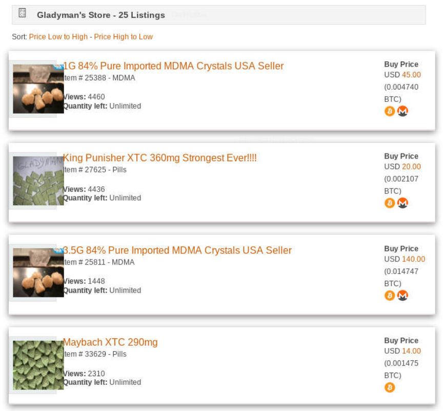

Darkweb Vendor "Gladyman" Charged for Meth Distribution
Lawrence Ross, a convicted felon from Bayshore, New York, faces charges for allegedly selling methamphetamine and ecstasy on various darkweb markets under the username Gladyman. According to court documents, Ross also distributed drugs through the encrypted messaging application Wickr.
The Investigation
In November 2018, the United States Postal Inspection Service learned that Ross had been selling drugs through the darkweb under the username “Gladyman.” During that month, USPIS intercepted a package containing ecstasy “Using various law enforcement databases, Postal Inspectors traced the box back to the defendant Lawrence Ross, who had shipped the box from his residence at 160 Tabor Street, Brentwood, New York by handing it to a postal carrier who remembered him,” according to the criminal complaint.
After the interception and subsequent identification of Ross, a search of law enforcement databases revealed that Ross had a former conviction for Criminal Possession of a Controlled Substance (ecstasy) with intent to sell. He was paroled and will be on parole until 2020 for the 2017 ecstasy charge. Although the 2017 case highlighted that Ross had been buying drugs from suppliers internationally, courts—at the time—seemingly found no connection between his international drug conspiracy and the darkweb. The connection most likely existed then in the same way it existed in the most recent case.

The fully documented investigation began two months letter in January 2018. A postal inspector with USPIS, began interacting with Gladyman on an undisclosed darkweb market. He made a number of purchases from Gladyman between January and March 2019. The pills were then sent via U.S. Mail to an undercover P.O. Box. After several transactions with Gladyman, the Postal Inspector began to engage with Gladyman on Wickrr (as Gladyman had advertised on his dark web profile the ability to communicate with him via Wickr using the screenname “Sweettooth80.”
In April, after Homeland Security Investigations had intercepted a pill press die addressed to Ross, investigators installed a camera facing Ross’ house.
The Postal Inspector made a number of controlled purchases and observed Ross drop the packages off at the Post Office. The section below is one many similar examples described by law enforcement in court documents:
Then, on May 3l, 2019, utilizing an undercover Wickr account, I ordered 100 ecstasy pills from defendant Lawrence Ross at screenname Sweettooth80. I transferred .11916871 Bitcoin ($1,000) from my digital wallet to defendant Ross’s digital wallet. While I was communicating this order to the defendant Ross via Wickr, law enforcement officers were surveilling [Ross’ address]. A few hours after placing the order, law enforcement officers observed the defendant Ross exit [his house], get into a black 2016 Nissan Maxima, and drive to the Islip Post Office. At the Post Office, defendant Ross dropped off 33 packages including a package addressed to me at my undercover name and P.O. Box. The package was seized by law enforcement officers and determined to contain 100 pills that tested positive for the presence of ecstasy.
Raid and Arrest Application
Law enforcement, in an application for a warrant, detailed the importance of seizing a suspect’s electronics before the suspect has an opportunity to encrypt the devices.
[I]ndividuals who engage in criminal behavior involving the dark net and other anonymizing technology oftentimes use encryption software that, if activated, would thwart law enforcement’s ability to obtain evidence. This activation can be done in as simple a manner as closing a laptop or pressing a button on a keyboard. Upon encrypting the device, there is often no way for law enforcement to successfully access it, even with the use of advanced decryption technology. Given the fact that an electronic device associated with the criminal enterprise would hold highly relevant evidence to the investigation, it is critical that law enforcement are able to quickly secure the occupant(s) and any devices before any encryption takes place.
A search warrant executed on July 24, 2019, resulted in the seizure of 10 kilograms of ecstasy; a pill press; approximately $250,000 of Bitcoin; and approximately $50,000 of U.S. currency.

Charges
On July 25, Richard P. Donoghue, United States Attorney for the Eastern District of New York, announced Ross’ charges: conspiring to distribute, and distributing, more than 10 kilograms of ecstasy and more than 45 grams of methamphetamine.
The full announcement is available at the website for the United States Attorney’s Office for the Eastern District of New York.
The Investigation
In November 2018, the United States Postal Inspection Service learned that Ross had been selling drugs through the darkweb under the username “Gladyman.” During that month, USPIS intercepted a package containing ecstasy “Using various law enforcement databases, Postal Inspectors traced the box back to the defendant Lawrence Ross, who had shipped the box from his residence at 160 Tabor Street, Brentwood, New York by handing it to a postal carrier who remembered him,” according to the criminal complaint.
After the interception and subsequent identification of Ross, a search of law enforcement databases revealed that Ross had a former conviction for Criminal Possession of a Controlled Substance (ecstasy) with intent to sell. He was paroled and will be on parole until 2020 for the 2017 ecstasy charge. Although the 2017 case highlighted that Ross had been buying drugs from suppliers internationally, courts—at the time—seemingly found no connection between his international drug conspiracy and the darkweb. The connection most likely existed then in the same way it existed in the most recent case.
Gladyman Empire Profile
The fully documented investigation began two months letter in January 2018. A postal inspector with USPIS, began interacting with Gladyman on an undisclosed darkweb market. He made a number of purchases from Gladyman between January and March 2019. The pills were then sent via U.S. Mail to an undercover P.O. Box. After several transactions with Gladyman, the Postal Inspector began to engage with Gladyman on Wickrr (as Gladyman had advertised on his dark web profile the ability to communicate with him via Wickr using the screenname “Sweettooth80.”
In April, after Homeland Security Investigations had intercepted a pill press die addressed to Ross, investigators installed a camera facing Ross’ house.
The Postal Inspector made a number of controlled purchases and observed Ross drop the packages off at the Post Office. The section below is one many similar examples described by law enforcement in court documents:
Then, on May 3l, 2019, utilizing an undercover Wickr account, I ordered 100 ecstasy pills from defendant Lawrence Ross at screenname Sweettooth80. I transferred .11916871 Bitcoin ($1,000) from my digital wallet to defendant Ross’s digital wallet. While I was communicating this order to the defendant Ross via Wickr, law enforcement officers were surveilling [Ross’ address]. A few hours after placing the order, law enforcement officers observed the defendant Ross exit [his house], get into a black 2016 Nissan Maxima, and drive to the Islip Post Office. At the Post Office, defendant Ross dropped off 33 packages including a package addressed to me at my undercover name and P.O. Box. The package was seized by law enforcement officers and determined to contain 100 pills that tested positive for the presence of ecstasy.
Raid and Arrest Application
Law enforcement, in an application for a warrant, detailed the importance of seizing a suspect’s electronics before the suspect has an opportunity to encrypt the devices.
[I]ndividuals who engage in criminal behavior involving the dark net and other anonymizing technology oftentimes use encryption software that, if activated, would thwart law enforcement’s ability to obtain evidence. This activation can be done in as simple a manner as closing a laptop or pressing a button on a keyboard. Upon encrypting the device, there is often no way for law enforcement to successfully access it, even with the use of advanced decryption technology. Given the fact that an electronic device associated with the criminal enterprise would hold highly relevant evidence to the investigation, it is critical that law enforcement are able to quickly secure the occupant(s) and any devices before any encryption takes place.
A search warrant executed on July 24, 2019, resulted in the seizure of 10 kilograms of ecstasy; a pill press; approximately $250,000 of Bitcoin; and approximately $50,000 of U.S. currency.

Gladyman Listings on Empire
Charges
On July 25, Richard P. Donoghue, United States Attorney for the Eastern District of New York, announced Ross’ charges: conspiring to distribute, and distributing, more than 10 kilograms of ecstasy and more than 45 grams of methamphetamine.
The full announcement is available at the website for the United States Attorney’s Office for the Eastern District of New York.